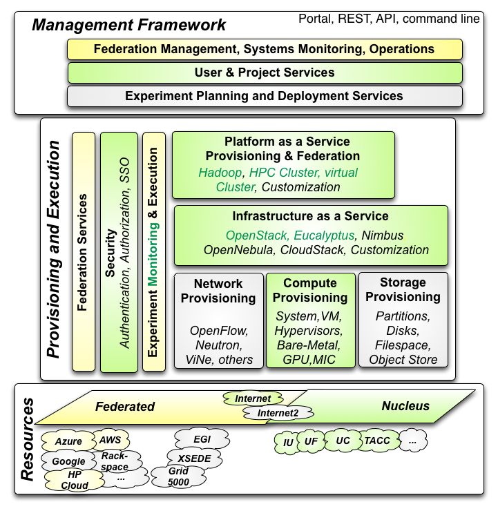

Cloudmesh
Site
Table of Contents
Projects
Overview
Cloudmesh Software and Architecture
Projects
Overview
FutureGrid: Cloud Computing Testbed as a Service: Project Vision
Initial Set of Use Cases for FutureGrid
FG service architecture to research, develop and experiment with novel cloud systems
FutureGrid System Organization and Internal Architecture
FutureCloud Management and Operations
Cloudmesh Software and Architecture
Management Framework
Accounting and App Store
Networking
Software Defined Storage as a Service
Monitoring
Role and Use of Standards and Open Source Software
Development Projects
Rain
Cloud Mesh
Cloud Metrics
CMD3
OLD CM
TBD
Teefaa
FG Portal
FG Statistics
Github
References
Page
Projects
« Overview
Overview »
Source
Projects
¶
Projects
Image
Project
Description
Source

Cloudmesh Core
github
,
doc
CMD3
github
,
doc
a
Teefaa
github
,
doc
a
Rain
github
doc
a
Rain-Move
github
,
doc
Cloud-Metrics
github
,
doc
github
Virtual-Cluster
github
,
doc
Portal
www
a
Planing
github
,
doc